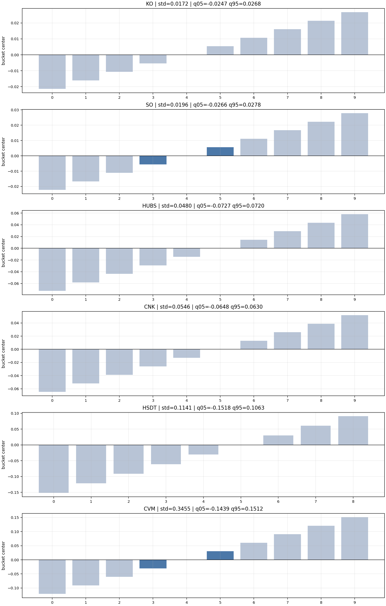
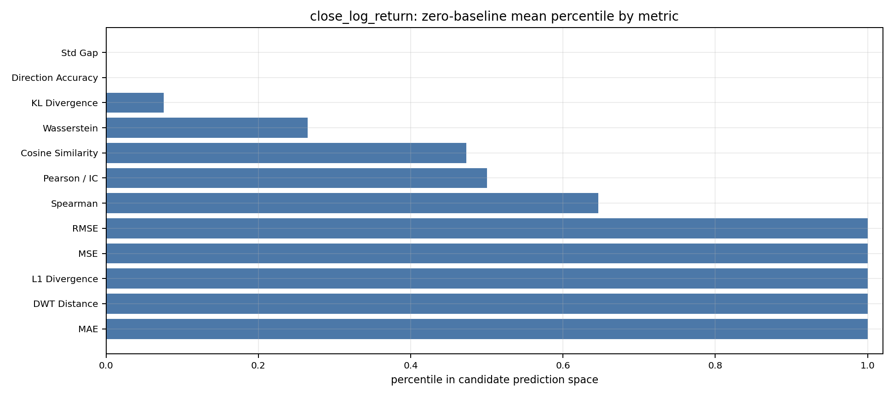
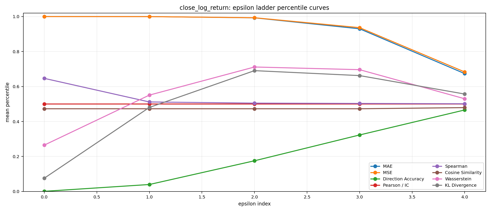
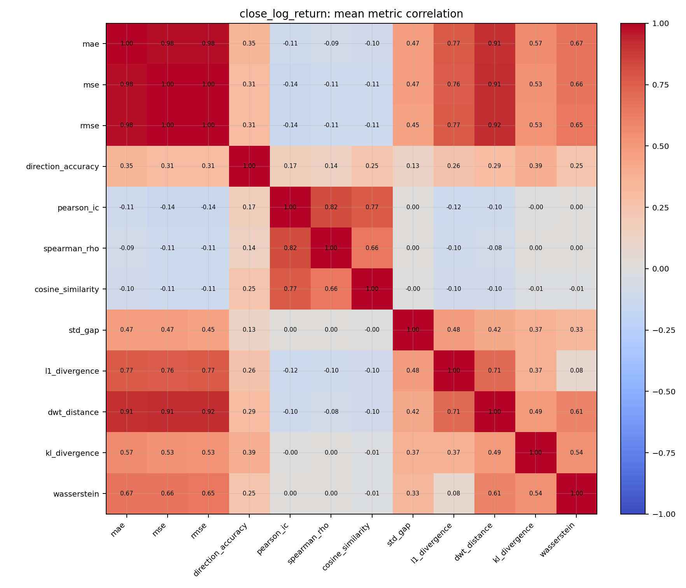
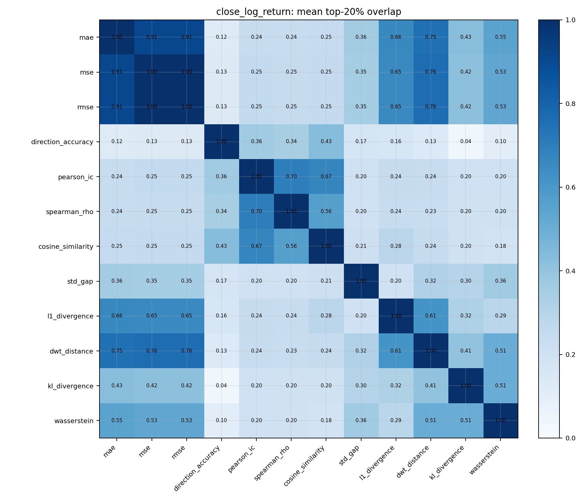
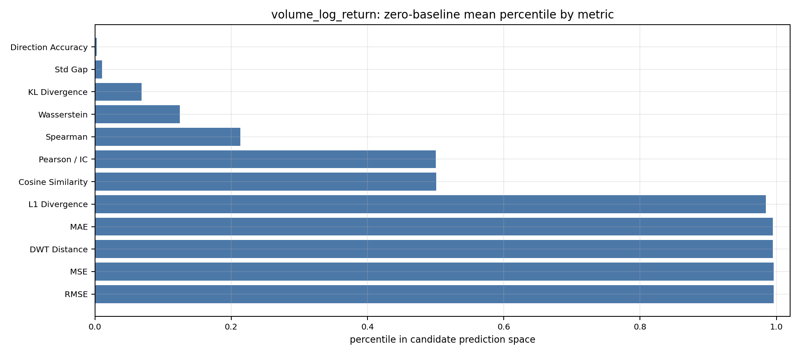
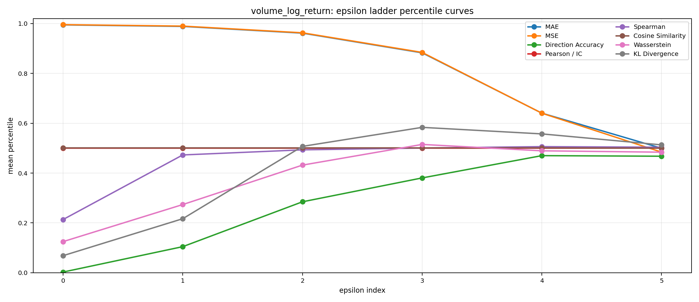
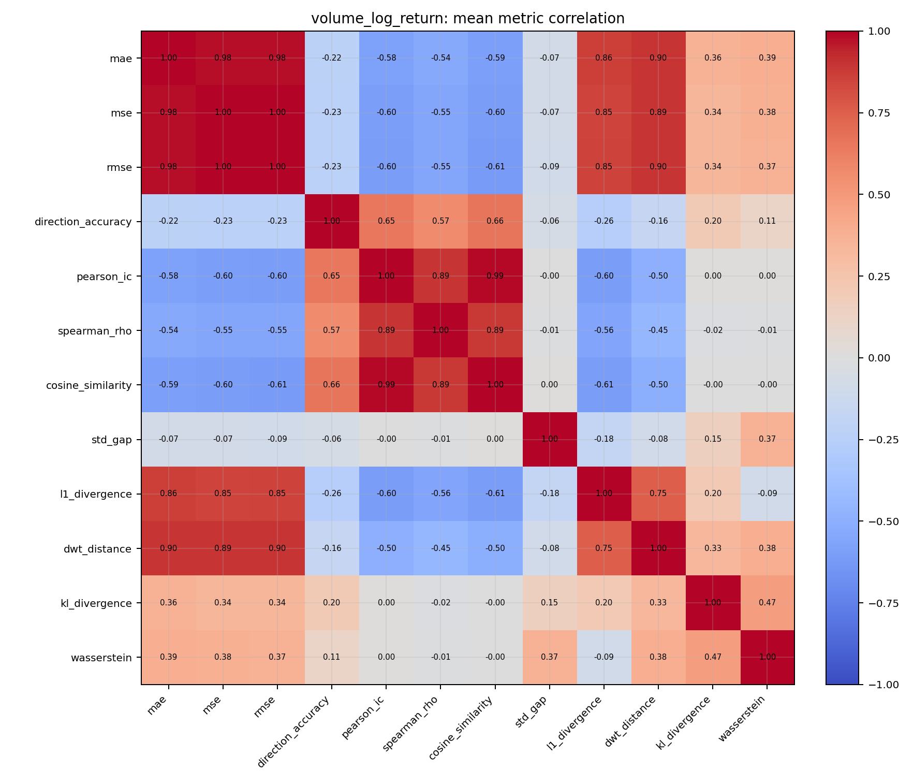
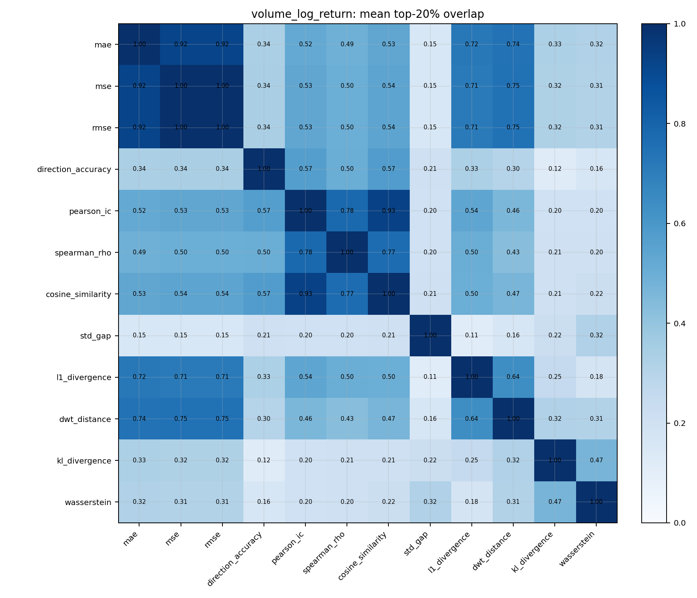

This introductory report covers the 100 ticker q05/q95 experiment. Compared with the older min/max range, each ticker-target pair now trims the value range to the historical 5th and 95th percentiles before constructing a zero-centered 11-bucket ladder. This is intended to reduce the influence of extreme tails and test whether the strong-zero-baseline phenomenon still survives when candidate values are constrained to the central body of the historical distribution.
| target | tickers | weekly windows | bucket count | max prediction count |
|---|---|---|---|---|
| close_log_return | 100 | 16900 | 11 | 10000000 |
| volume_log_return | 100 | 16900 | 11 | 19487171 |
1. Ticker-wise q05/q95 buckets. For each ticker, we aggregate hourly log returns into daily 7-step non-overlapping weekly windows. Then we estimate that ticker's own historical 5th and 95th percentiles and build a zero-centered 11-bucket ladder inside that trimmed interval. This means the candidate space is no longer dominated by the most extreme historical tails.
2. Epsilon-baseline meaning. Epsilon-baseline is not hand-designed separately. It comes directly from the bucket ladder. epsilon_index = 0 means only the zero bucket is allowed. epsilon_index = 1 means all bucket centers with absolute value no larger than one bucket step from zero are allowed, and so on. The table below reports the mean percentile of each epsilon-baseline in the candidate prediction space.
3. Case examples. The following cases show what ticker-wise q05/q95 bucket ladders look like for low, middle, and high volatility names.
| symbol | daily std | q05 | q95 | # buckets | step |
|---|---|---|---|---|---|
| KO | 0.0172 | -0.0247 | 0.0268 | 10 | 0.0054 |
| SO | 0.0196 | -0.0266 | 0.0278 | 10 | 0.0056 |
| HUBS | 0.0480 | -0.0727 | 0.0720 | 10 | 0.0145 |
| CNK | 0.0546 | -0.0648 | 0.0630 | 10 | 0.0130 |
| HSDT | 0.1141 | -0.1518 | 0.1063 | 9 | 0.0304 |
| CVM | 0.3455 | -0.1439 | 0.1512 | 10 | 0.0302 |

Each ticker uses its own q05/q95 range, then a zero-centered 11-bucket ladder clipped to that interval. The tables and charts below show whether trimming out the extreme tails changes the conclusion that near-zero forecasts dominate amplitude losses but not directional or correlational metrics.
After trimming each ticker to its own q05/q95 range, the zero bucket still dominates amplitude losses for close log return: MAE=1.0000, MSE=1.0000, RMSE=1.0000, and Wasserstein=0.2650 remain extremely strong. But Direction Accuracy=7.10e-04 stays weak and Pearson / IC=0.5000 stays neutral. Spearman=0.6466 and Cosine=0.4728 are higher than Pearson/IC, which suggests some rank or orientation structure survives without turning into useful signed forecasts.
Takeaway: clipping away the tails does not remove the strong-zero-baseline story for close. It mainly makes the mismatch between amplitude losses and directional or correlational objectives easier to see.
| epsilon_index | Cosine Similarity | DWT Distance | Direction Accuracy | KL Divergence | L1 Divergence | MAE | MSE | Pearson / IC | RMSE | Spearman | Std Gap | Wasserstein |
|---|---|---|---|---|---|---|---|---|---|---|---|---|
| 0 | 0.4728 | 1.0000 | 7.10e-04 | 0.0758 | 1.0000 | 1.0000 | 1.0000 | 0.5000 | 1.0000 | 0.6466 | 4.59e-04 | 0.2650 |
| 1 | 0.4728 | 0.9995 | 0.0397 | 0.4805 | 0.9990 | 0.9998 | 0.9998 | 0.5000 | 0.9998 | 0.5117 | 0.0136 | 0.5509 |
| 2 | 0.4728 | 0.9893 | 0.1754 | 0.6907 | 0.9809 | 0.9928 | 0.9933 | 0.5000 | 0.9934 | 0.5050 | 0.1116 | 0.7116 |
| 3 | 0.4728 | 0.9251 | 0.3229 | 0.6625 | 0.8936 | 0.9301 | 0.9366 | 0.5000 | 0.9380 | 0.5031 | 0.3454 | 0.6963 |
| 4 | 0.4794 | 0.6826 | 0.4659 | 0.5570 | 0.6394 | 0.6739 | 0.6833 | 0.5000 | 0.6917 | 0.5013 | 0.4595 | 0.5300 |




| metric | pct |
|---|---|
| MAE | 1.0000 |
| DWT Distance | 1.0000 |
| L1 Divergence | 1.0000 |
| MSE | 1.0000 |
| RMSE | 1.0000 |
| Spearman | 0.6466 |
| Pearson / IC | 0.5000 |
| Cosine Similarity | 0.4728 |
| Wasserstein | 0.2650 |
| KL Divergence | 0.0758 |
| Direction Accuracy | 7.10e-04 |
| Std Gap | 4.59e-04 |
Each ticker uses its own q05/q95 range, then a zero-centered 11-bucket ladder clipped to that interval. The tables and charts below show whether trimming out the extreme tails changes the conclusion that near-zero forecasts dominate amplitude losses but not directional or correlational metrics.
For volume log return, the zero bucket is still strong on amplitude losses, but the dominance is softer than for close. MAE=0.9948, MSE=0.9957, and RMSE=0.9957 remain high, while Wasserstein=0.1248, Std Gap=0.0104, and KL=0.0684 are less extreme. Direction Accuracy=0.0026 remains weak and Pearson / IC=0.5000 remains neutral.
Takeaway: trimming to q05/q95 weakens the extreme-zero picture for volume more than for close, but it still does not make directional or correlation metrics align with amplitude-style objectives.
| epsilon_index | Cosine Similarity | DWT Distance | Direction Accuracy | KL Divergence | L1 Divergence | MAE | MSE | Pearson / IC | RMSE | Spearman | Std Gap | Wasserstein |
|---|---|---|---|---|---|---|---|---|---|---|---|---|
| 0 | 0.5010 | 0.9950 | 0.0026 | 0.0684 | 0.9846 | 0.9948 | 0.9957 | 0.5000 | 0.9957 | 0.2134 | 0.0104 | 0.1248 |
| 1 | 0.5010 | 0.9886 | 0.1046 | 0.2168 | 0.9722 | 0.9887 | 0.9899 | 0.5000 | 0.9901 | 0.4728 | 0.0174 | 0.2736 |
| 2 | 0.5010 | 0.9603 | 0.2847 | 0.5071 | 0.9291 | 0.9617 | 0.9630 | 0.5000 | 0.9644 | 0.4932 | 0.0432 | 0.4319 |
| 3 | 0.5010 | 0.8825 | 0.3805 | 0.5835 | 0.8348 | 0.8827 | 0.8843 | 0.5000 | 0.8892 | 0.5005 | 0.1213 | 0.5150 |
| 4 | 0.5010 | 0.6526 | 0.4699 | 0.5572 | 0.6016 | 0.6405 | 0.6404 | 0.5000 | 0.6541 | 0.5061 | 0.3073 | 0.4893 |
| 5 | 0.5000 | 0.5150 | 0.4676 | 0.5132 | 0.4965 | 0.4997 | 0.4841 | 0.5000 | 0.5080 | 0.5038 | 0.4773 | 0.4838 |




| metric | pct |
|---|---|
| RMSE | 0.9957 |
| MSE | 0.9957 |
| DWT Distance | 0.9950 |
| MAE | 0.9948 |
| L1 Divergence | 0.9846 |
| Cosine Similarity | 0.5010 |
| Pearson / IC | 0.5000 |
| Spearman | 0.2134 |
| Wasserstein | 0.1248 |
| KL Divergence | 0.0684 |
| Std Gap | 0.0104 |
| Direction Accuracy | 0.0026 |